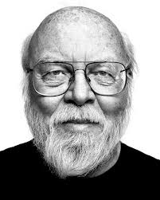

Основная информация
Джеймс Гослинг - автор объектно-ориентированного и кросс-платформенного языка программирования Java. Кроме того, является создателем оконной системы NeWS, Gosling Emacs, а также был одним из разработчиков Star Seven.
«Подобно математике, программирование ищет кратчайший путь решения задачи. Это постоянное движение по графику возможностей в попытке создать наиболее короткую программу, выполняющую свою работу. Здесь важно не только найти ответ, но и определить наилучший путь от вопроса к ответу.»
Джеймс Гослинг